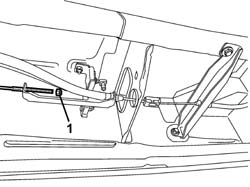

3380A04 HANDBRAKE - ADJUST TRAVEL
- Path
- Procedures > 33 BRAKES > 3380 HANDBRAKE > 3380A HANDBRAKE CONTROL AND LINKAGE > 3380A04 HANDBRAKE - ADJUST TRAVEL
- Kind
- repair procedure (removal / refitting; the operation number is the code)
- Applies to
- all engines; all production periods
- Interactive page
- https://sloeber94.github.io/elrnDB-fUlss/en/#/179007340
Applies to: all engines; all production periods
- Position the vehicle on a lift.
- Raise the vehicle.
- Mark nut position, then loosen the handbrake cable adjustment nut by at least 3 turns to ensure the cable is completely slack.

Applies to: all engines; all production periods
- Start the engine.
- With the engine idling, press the brake pedal forcefully at least 10 or 15 times.
- Re-tighten the handbrake cable adjustment nut to the original position.
- Ensure that the rear wheels are free to turn with the handbrake lever at rest.
- Check that the handbrake braking action begins from the first click.
- After adjustment, check that the lever does not engage with the toothed sector by more than five clicks.
- Switch off the engine.
Topics that link to this page (8)
- 3310B34 REAR BRAKE CALIPERS - R + R - INCLUDES HANDBRAKE ADJUSTMENT
- 3310B48 REAR BRAKE DISC - R R
- 3310B57 REAR BRAKE CALIPER BRACKET (ONE), LEFT OR RIGHT - R.R.
- 3310B62 REAR BRAKE PADS - REPLACE
- 3310B64 REAR BRAKE PADS - REPLACE WITH WHEELS REMOVED - INCLUDING HANDBRAKE ADJUSTMENT (IF NECESSARY)
- 3380A32 HANDBRAKE CONTROL CABLE - R R FOR VERSIONS WITH REAR DISC BRAKES
- 3380A38 LINK/CABLE CONNECTING HANDBRAKE LEVER TO CABLE - R+R
- 3380A40 LINKAGE SUPPORTS AND IDLERS - R+R